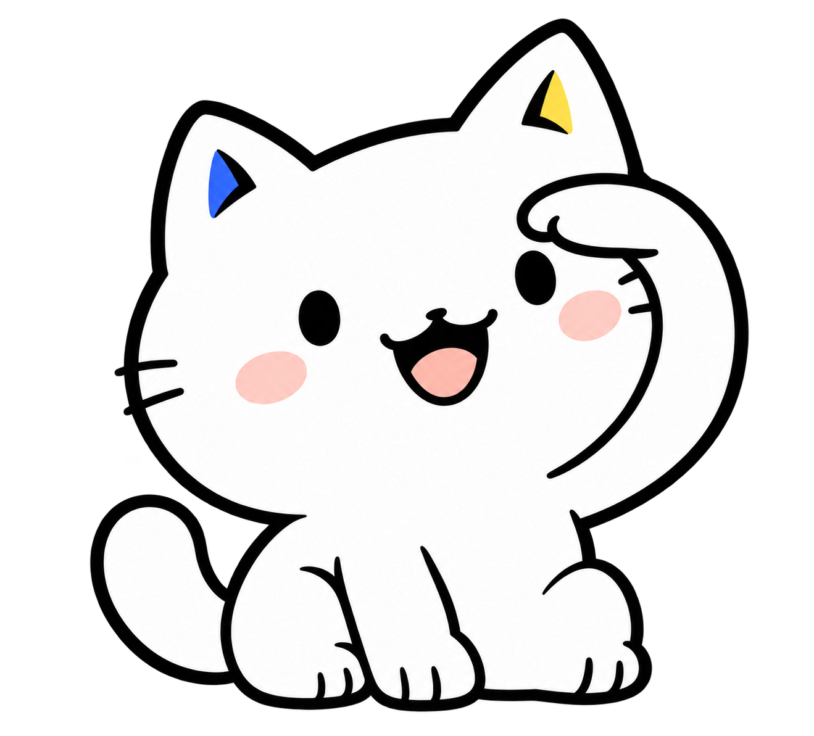
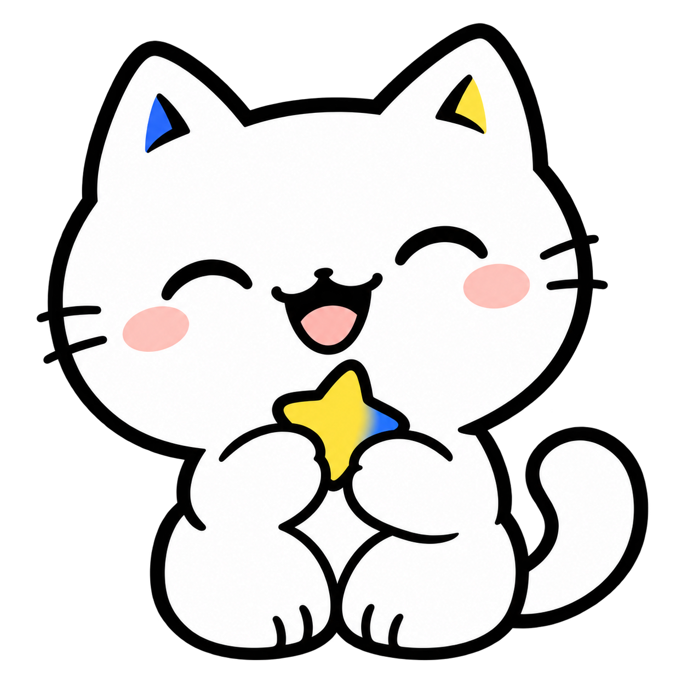
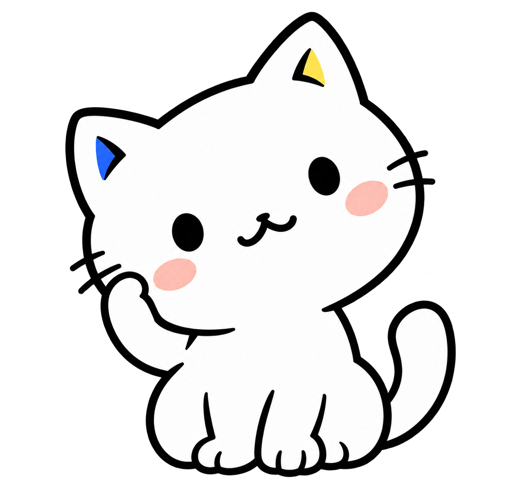

Luminous · 七个小动作
待确认的插画与拟放位置 · 正式页面尚未嵌入

发现社区 · 张望
页头右侧，靠近标题区域。
与创建按钮保留间距。
社区详情 · 托腮
右侧「社区约定」卡片内。
手机端随卡片排到讨论区下方。
帖子详情 · 看书
正文末尾右下方。
放在点赞、收藏按钮之前。

我的收藏 · 抱星星
「我的收藏」页头右侧。
不占用帖子列表的位置。
个人主页 · 整理耳朵
个人资料卡底部右侧。
和发帖、关注统计并排。
管理后台 · 拿记录板
管理后台页头右侧。
小尺寸，不进入用户表格。

404 页面 · 歪头
404 提示上方居中。
可以比其他页面稍大一些。